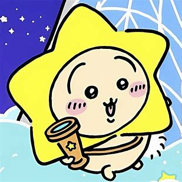

回原页面

角色名：兔兔（日语：うさぎ），中国大陆动画版译作乌萨奇。
生日：2019年1月22日
武器：中间黄色两端白色的棍棒，一端有兔兔的涂鸦，两头可以发射火药
住所：未知
介绍：
《吉伊卡哇》系列中的主要角色之一。是吉伊和小八的好朋友，以兔子为原型。身体小小的，身体的毛发是黄色，尾巴为白色的大绒球。
靠除草、采集和讨伐为生，已考取三级除草证。
性格活泼，精力充沛，无所畏惧，面对困难会想出很多点子。
看似大条和无所谓，但会在乎朋友们。乐于和朋友们分享食物，在朋友遇到困难时陪伴和保护对方，对抗敌人。
会发出各种奇特的叫声来表达和沟通，如“乌拉”“呀哈”等，情绪高涨地跑来跑去。行为难以预测，经常有出其不意的举动。
战斗力较强，在紧要关头能带领同伴们扭转局势。
经常在二手店购入奇怪的道具。有时会拿来可疑的物品，也有因此受到诅咒的时候。
弹吉他的技艺高超。在地下洞穴里的酒吧当过DJ，用树叶摩擦橡子发出音乐声。
私生活充满谜团。